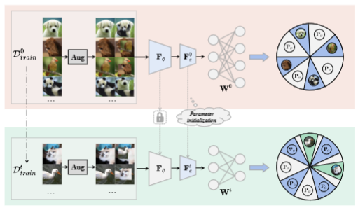
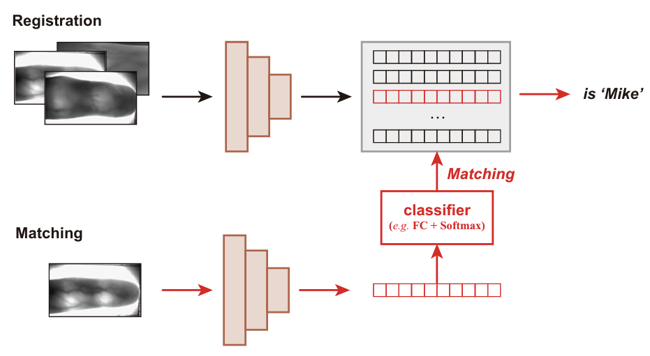
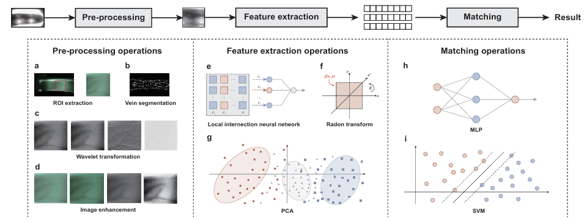
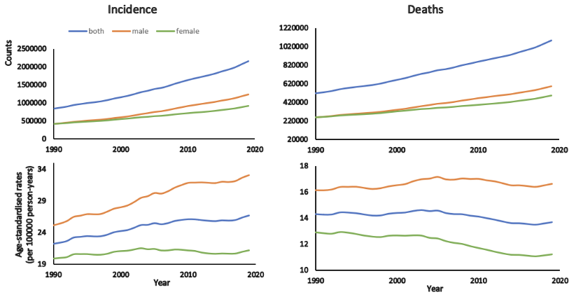
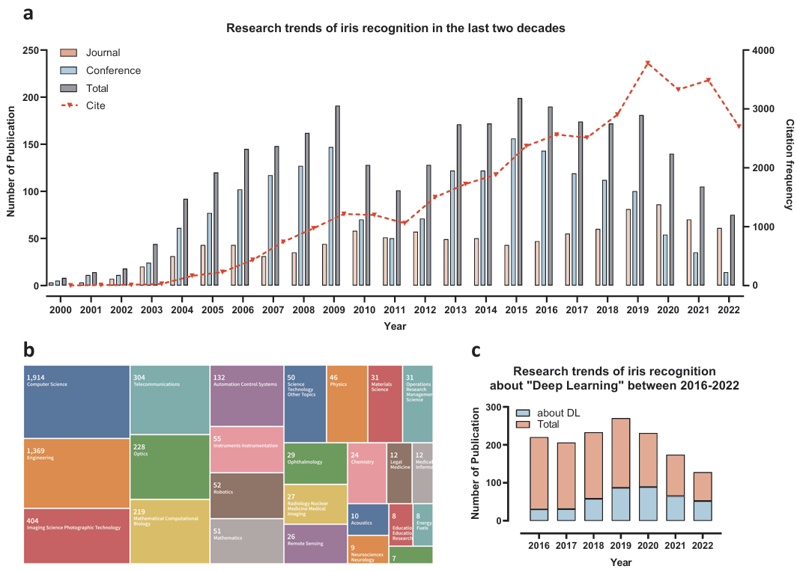

文科篇
理科篇
学术论文

Partitioned Memory Storage Inspired Few-Shot Class-Incremental learning
Under Review
Renye Zhang, Yimin Yin, Peng Zhao, Jinghua Zhang
[paper] [bibtex]

Deep Learning for Finger Vein Recognition: A Brief Survey of Recent Trend
Accepted in
ISICDM
Renye Zhang, Yimin Yin, Wanxia Deng, Chen Li, Jinghua Zhang
[paper] [bibtex]

Artificial Neural Networks for Finger Vein Recognition: A Survey
Under Review
Yinyi Min, Renye Zhang, Pengfei Liu, Wanxia Deng, Siliang He, Chen Li, Jinghua Zhang
[paper] [bibtex]

Deep Learning-based Histopathological Image Classification of Colorectal Cancer: A Brief Survey of Recent Trends
Published in
Computational Intelligence and Intelligent Systems
Yule Wang, Yimin Yin, Renye Zhang, Jinghua Zhang
[paper] [bibtex]

Deep learning for iris recognition: a review
Under Review
Yinyi Min, Siliang He, Renye Zhang, Hongli Chang, Xu Han, Jinghua Zhang
[paper] [bibtex]
数学建模
获奖经历
恃国家之大，矜民人之众，欲见威于敌者，谓之骄兵，兵骄者灭——班固《汉书·魏相传》
![[2023-06] 2023年校大学生数学竞赛非数学专业组一等奖](Res\Award\2023数学竞赛校级一等奖.jpg){kind=link}
![[2023-09] 2023年全国大学生数学竞赛湖南省赛区二等奖](Res\Award\数学竞赛省赛二等奖.jpg){kind=link}
![[2023-06] 2023年校大学生数学建模竞赛冠军](Res\Award\数学建模校级一等奖.jpg){kind=link}
![[2023-01] 第十四届全国大学生数学竞赛三等奖](Res\Award\数学竞赛国赛三等奖.jpg){kind=link}
![[2022-10] “建行杯”第八届湖南省“互联网+”大学生创新创业大赛校级初赛（主持）二等奖](Res\Award\互联网＋校级二等奖.jpg){kind=link}
![[2022-10] “建行杯”第八届湖南省“互联网+”大学生创新创业大赛校级初赛三等奖](Res\Award\互联网＋校级三等奖.jpg){kind=link}
![[2022-10] 2022年校“挑战杯”大学创业计划竞赛三等奖](Res\Award\挑战杯校级三等奖.jpg){kind=link}